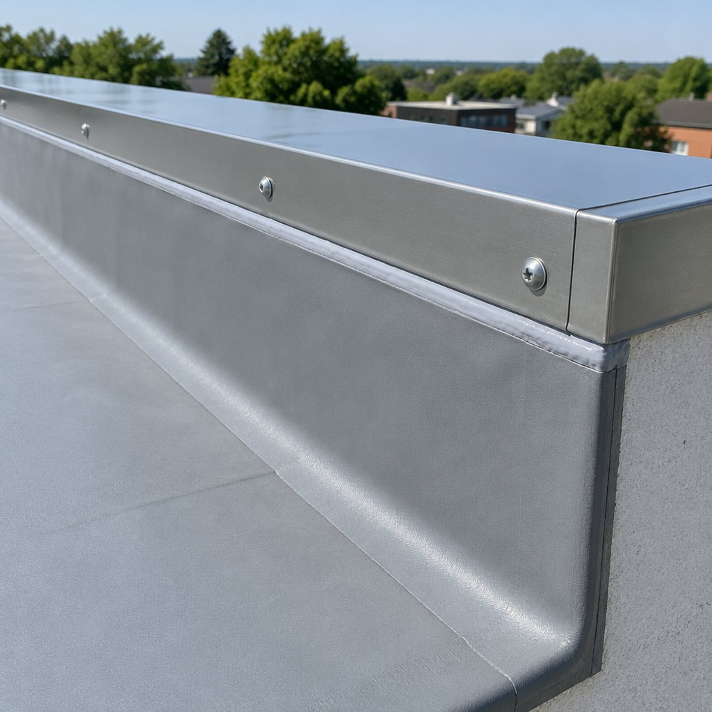

Узлы
Четыре места, где кровля течёт чаще всего: парапет, воронка, примыкание к стене и шов. Показываю схемы и то, как их делать правильно.
Как выглядят узлы
Схемы схематичные, но принцип настоящий: направление мембраны, край, крепление, герметик.
Парапет
Мембрана поднимается на парапет, край фиксируется прижимной планкой, сверху герметик. В углу — галтель, чтобы не было пустоты под полотном.
Воронка
Фланец воронки приваривается к мембране по контуру. Вокруг — понижение, уклон к воронке от 2%. Забитая воронка = вода на кровле.
Примыкание к стене
Мембрана заводится на стену, край уходит под планку или в штробу, стык закрывается герметиком.
Сварной шов
Нахлёст 100 мм, прогрев 500–620 °C, прикатка роликом, проверка щупом. T-образные стыки варим отдельно.
Что чаще всего делают не так
Край мембраны не закреплён
Полотно поднимают на парапет, но не прижимают планкой: ветер отрывает край, вода заходит под мембрану.
Галтель «на глаз»
Без галтели в углу остаётся воздушная полость: полотно продавливается и рвётся по кромке.
Воронка без уклона
Вода не доходит до воронки, стоит на полотне и зимой замерзает.
Шов «на клей»
Клей на ПВХ держит хуже сварки и стареет. Через пару сезонов шов расходится.
Заплатка без сварки по контуру
Заплатку приклеивают, а не приваривают: вода находит край.
Сомневаетесь в узле?
Пришлите фото — покажем по снимку, что сделано не так и как исправить.